library(tidyverse)
library(sf)
library(sdmTMB)
library(here)
library(INLA) #
library(gstat) #
library(mgcv)
library(sp)
library(DHARMa) #
library(sdmTMBextra) #remotes::install_github("pbs-assess/sdmTMBextra", dependencies = TRUE)
# load processed data from R/data_processing_and_visualization
load(here::here("data/processed_hair_crab_data.rdata"))
# load hair crab data (includes design-based index)
load(here::here("data/hair_cpue.rdata"))
# source helper functions
source(here::here("R/helpers.R"))
# Convert sf to data.frame for use with sdmTMB
hair_cpue <-
hair_cpue_sf_filt %>%
sfc_as_cols(., names = c("longitude", "latitude")) %>% # turn points into lat/lon columns
st_set_geometry(NULL) %>% #convert to data.frame
filter(year >= 2014) %>%
mutate(district = factor(district))
# CRS
ak_crs <- "+proj=aea +lat_1=55 +lat_2=65 +lat_0=50 +lon_0=-154 +x_0=0 +y_0=0 +datum=NAD83 +units=km +no_defs"sdmTMB lab: index standardization
In this document, we’ll work through common modeling workflows for ecologists and fisheries scientists using sdmTMB to do index standardization.
Along the way, we’ll discuss model validation and residual checks, results visualization, and explore how tweaking model parameters impacts outcomes.
Packages and data
Mesh creation
Different approaches for mesh creation
sdmTMB internal functions will build a mesh for you if you’d like, although these functions still require user input and optimization. An alternative approach is to build the mesh yourself using functions from INLA. We will demonstrate the custom approach first so that you are familiar with the language associated with meshes.
Building a custom mesh with INLA
The inla.mesh.2d function is used to build the mesh, and selecting the parameters that govern mesh structure requires trial and error. The steps I describe here are based on those outlined in Zuur et al. 2017, Chapter 12 and Zuur et al. 2018, Chapter 19, https://rpubs.com/jafet089/886687, and https://haakonbakkagit.github.io/btopic104.html.
- Estimate a rough spatial range at which residual spatial autocorrelation diminishes. We do this by fitting a Tweedie GLM and then evaluating the distance among scaled residuals at which spatial correlations decline.
# fit a Tweedie GLM (ignore spatial autocorrelation)
tw_mod <- sdmTMB(cpue ~ 0 + as.factor(year),
data = hair_cpue,
spatial = "off",
family = tweedie())
# DHARMa residuals
resid_sim_tw_mod <- simulate(tw_mod, nsim = 500, type = "mle-mvn")
resid_dharm_tw_mod <- dharma_residuals(resid_sim_tw_mod, tw_mod, return_DHARMa = TRUE)
hair_cpue$tw_mod_resids <- resid_dharm_tw_mod$scaledResiduals
# Plot sample variogram for scaled residuals
gg_out <- NULL
for (i in unique(hair_cpue$year)){
hair_cpue_yr <- hair_cpue %>%
filter(year == i) %>%
as.data.frame()
sp::coordinates(hair_cpue_yr) <- c("longitude","latitude")
v1 <- gstat::variogram(tw_mod_resids ~ 1,
hair_cpue_yr)
assign("gg_out", rbind(tibble(distance = v1$dist,
Semivariance = v1$gamma,
year = i),
gg_out))
}
rough_range <- 100
ggplot(data = gg_out, aes(y = Semivariance,
x = distance, color = year)) +
geom_point() +
geom_smooth() +
geom_vline(xintercept = rough_range) +
labs(x = "Distance (km)") +
facet_wrap(~year, scales = "free_y")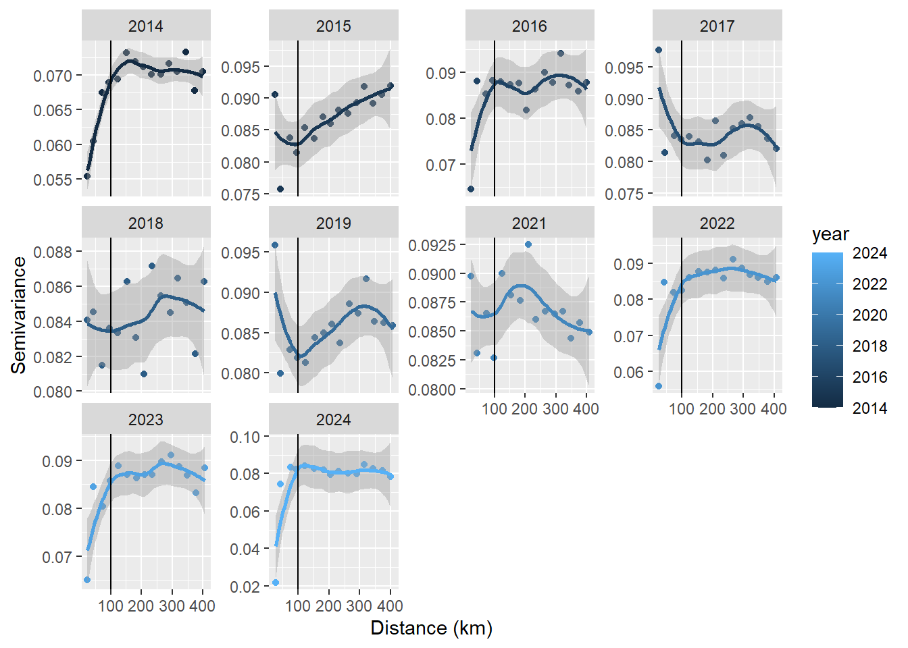
Here we use sample variograms to visualize how residual spatial autocorrelation changes with distance. If residual spatial autocorrelation is isotropic, then we would expect to see semivariance consistently increase and plateau where residuals are no longer well correlated.
The deviations from our expectations about semivariance shown here may be related to the fact that hair crab are patchily distributed in the Eastern Bering Sea. For now, we will pick a spatial range of 100 km for developing the mesh.
We next specify the spatial domain by passing sampling coordinates to the
loc.domainargument. This creates a concave hull around the sampling locations.We then address mesh resolution using
max.edge. This sets the maximum length of edges within the inner mesh. The maximum edge length for the outer boundary is set by adding a second value to this argument. Guidance from an INLA developer suggests thatmax.edgeshould be between 1/10 and 1/5 of the spatial range (https://rpubs.com/jafet089/886687) as a starting point. We will use a slightly coarser value in favor of estimation speed.The outer boundary serves the purpose of minimizing edge effects (large variance in vertex weights). The extent of the outer boundary is set by the
offsetargument. We set this value to be greater thanmax.edgeto provide multiple “layers” of triangles in the outer domain.- Once the spatial range is estimated be
sdmTMB, we can update our initial range in the mesh.
- Once the spatial range is estimated be
## INLA mesh----
max.edge <- rough_range/3
offset <- rough_range/2
custom_mesh <- INLA::inla.mesh.2d(loc.domain = st_coordinates(hair_cpue_sf_filt),
max.edge = c(max.edge, max.edge * 2),
offset = c(max.edge, offset))Warning: `inla.mesh.2d()` was deprecated in INLA 23.08.18.
ℹ Please use `fmesher::fm_mesh_2d_inla()` instead.
ℹ For more information, see
https://inlabru-org.github.io/fmesher/articles/inla_conversion.html
ℹ To silence these deprecation messages in old legacy code, set
`inla.setOption(fmesher.evolution.warn = FALSE)`.
ℹ To ensure visibility of these messages in package tests, also set
`inla.setOption(fmesher.evolution.verbosity = 'warn')`.# we need to convert the mesh prior to use in sdmTMB
custom_mesh_sdmTMB <- sdmTMB::make_mesh(data = hair_cpue,
xy_cols = c("longitude", "latitude"),
mesh = custom_mesh)This mesh has > 1000 vertices. Mesh complexity has the single largest influence
on fitting speed. Consider whether you require a mesh this complex, especially
for initial model exploration. Check `your_mesh$mesh$n` to view the number of
vertices.plot(ak_land, col = "darkgreen")
plot(custom_mesh, add = T)
points(hair_cpue$longitude, hair_cpue$latitude, col="blue")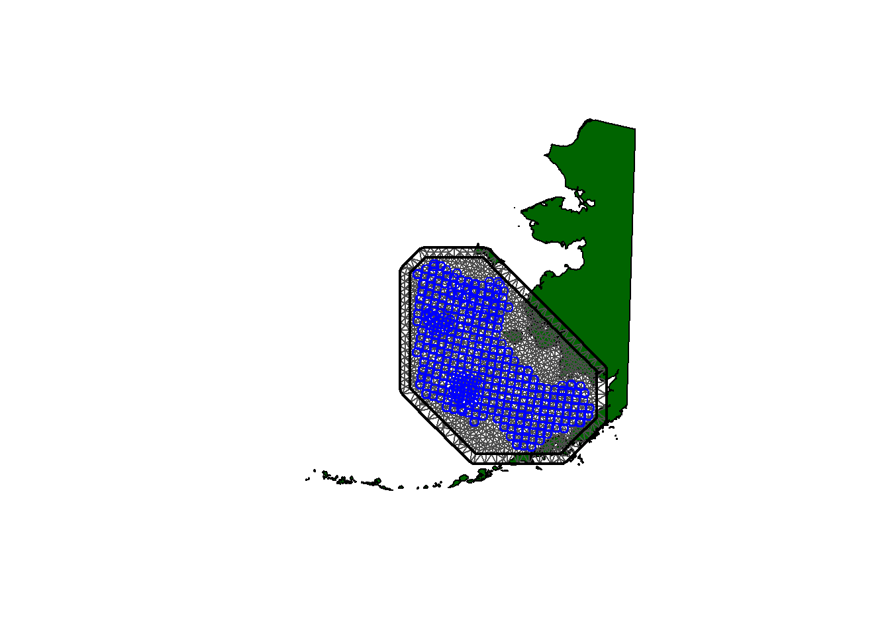
Haakon Bakka’s third suggestion for “What is needed for a good mesh” is that there should be no “weird-looking” parts. One thing that is immediately obvious in this mesh is that it extends over land. Is this an issue?
Probably not unless there is a very large island splitting the study domain. The model assumes correlations decay over Euclidean distances and therefore would “borrow strength” for predictions using observation nearby in Euclidean terms but much further away in terms of how crabs move. At the spatial scale of the Eastern Bering Sea, I would be surprised if this mattered. Nonetheless, here is a “barrier mesh” version of the previous mesh. We will come back to this to see if it matters.
## INLA mesh with barrier specified----
max.edge <- rough_range/3
offset <- rough_range/2
hair_loc_buffers_sp <- hair_loc_buffers %>% as_Spatial() #must be sp class, not sf
barrier_mesh <- INLA::inla.mesh.2d(boundary = hair_loc_buffers_sp,
max.edge = c(max.edge, max.edge * 2),
offset = c(max.edge * 2, offset))
# we need to convert the mesh prior to use in sdmTMB
barrier_mesh_sdmTMB <- sdmTMB::make_mesh(data = hair_cpue,
xy_cols = c("longitude", "latitude"),
mesh = barrier_mesh)
plot(ak_land, col = "darkgreen")
plot(barrier_mesh, add = T)
points(hair_cpue$longitude, hair_cpue$latitude, col="blue")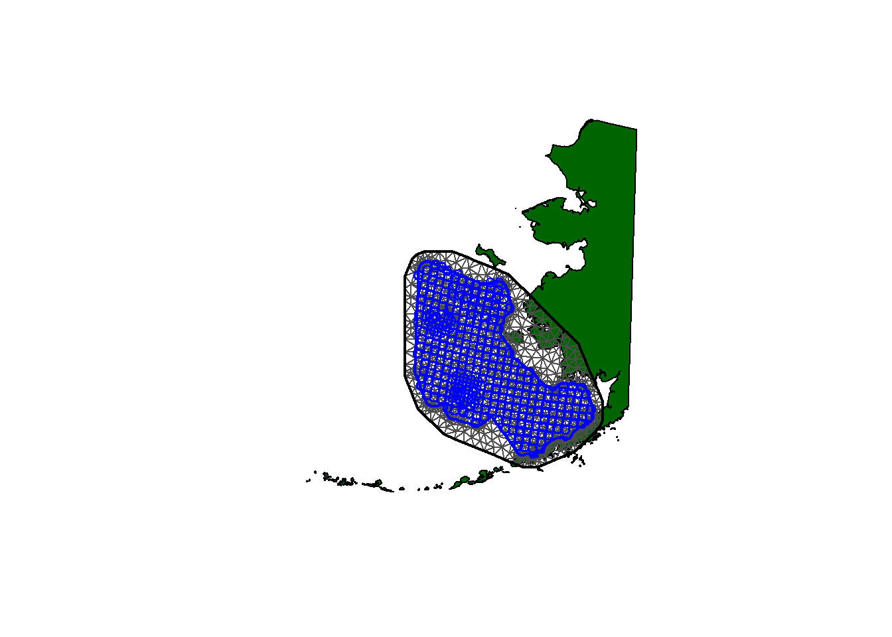
Allowing sdmTMB to make the mesh
The simpler option is to let internal functions within sdmTMB build the mesh for you using make_mesh. Within make_mesh, if type = "cutoff" then the user may adjust resolution by setting the cutoff value: lower cutoff provides a higher resolution mesh. If type = "kmeans" then the mesh vertices are assigned using an k-means algorithm, and the number of knots can be set with n_knots.
# Approaches within sdmTMB vignette------
# Extremely simple cutoff:
sdmTMB_mesh1 <- make_mesh(hair_cpue, c("longitude", "latitude"),
cutoff = 5, type = "cutoff")
plot(sdmTMB_mesh1)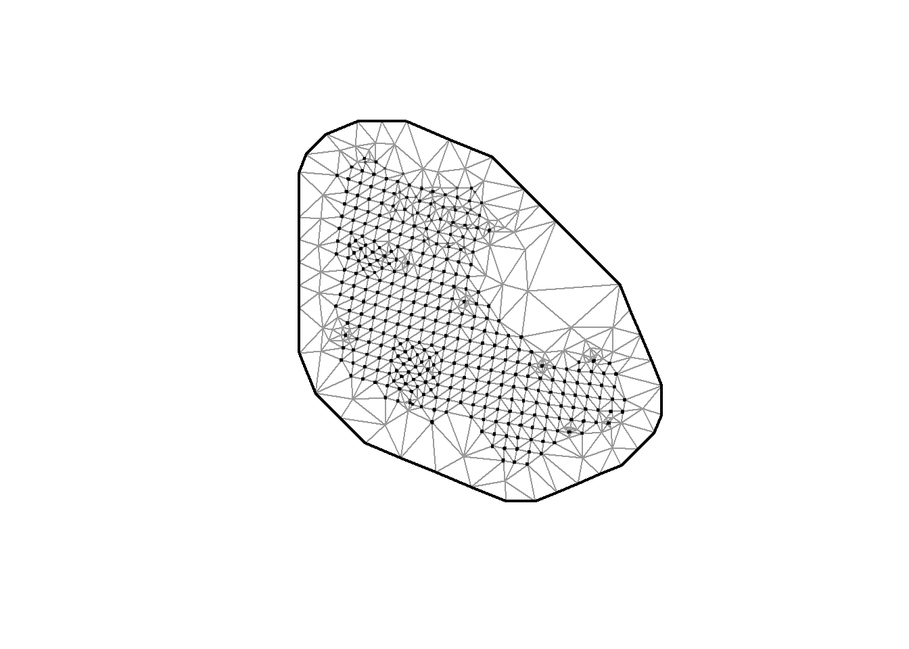
# Using a k-means algorithm to assign vertices:
sdmTMB_mesh2 <- make_mesh(hair_cpue, c("longitude", "latitude"),
n_knots = 150, type = "kmeans")
plot(sdmTMB_mesh2)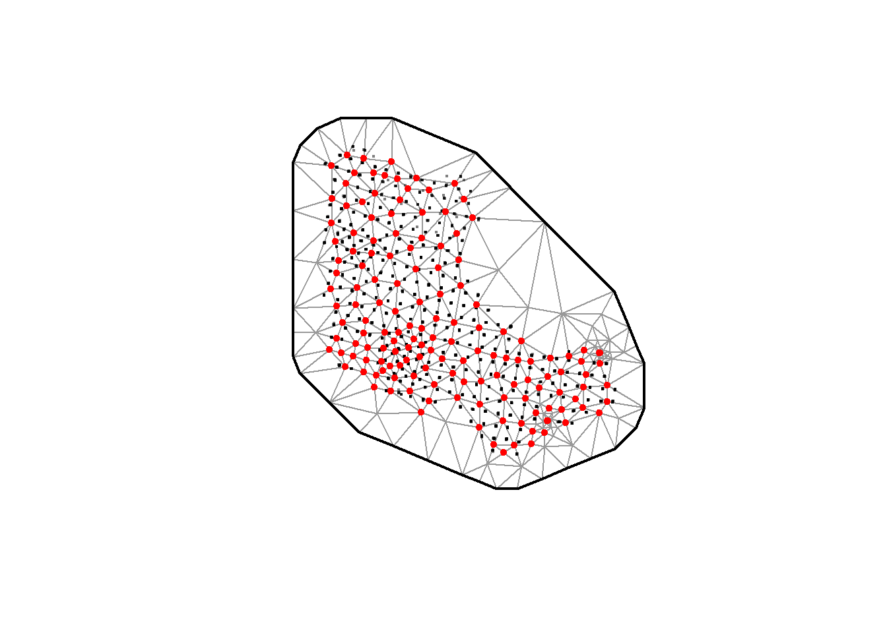
Mesh complexity
The number of vertices in the mesh is one of the primary factors determining computation time. To speed up modeling workflows, you might initially choose a coarser resolution mesh as you iterate on model structure.
tibble(`N vertices` = c(custom_mesh_sdmTMB$mesh$n,
barrier_mesh_sdmTMB$mesh$n,
sdmTMB_mesh1$mesh$n,
sdmTMB_mesh2$mesh$n),
Type = c("Custom - no barrier",
"Custom - barrier", #
"sdmTMB - cutoff",
"sdmTMB - kmeans"))# A tibble: 4 × 2
`N vertices` Type
<int> <chr>
1 1707 Custom - no barrier
2 3535 Custom - barrier
3 536 sdmTMB - cutoff
4 236 sdmTMB - kmeans Index standardization and comparisons with design-based indices
A common use of sdmTMB is to estimate the total or relative abundance or biomass of a species within a region over time, i.e., biomass or abundance “indices”. sdmTMB contains functions that will generate these indices when given a fitted model. We will explore these below, but it’s worth noting that these functions are simply taking model predictions and aggregating them in some way (e.g., summing predictions over space).
A benefit to using sdmTMB to generate these indices is that sdmTMB applies the delta method internally to calculate standard errors on predictions, regardless of user-selected aggregation function.
First, we need to fit a sdmTMB model. For simple index standardization, the relevant components are:
formula- the standard R formula interface. In this case, we are asking the model to fit categorical, fixed effects intercepts for each year of data. We ensure that an intercept is produced for all years by suppressing the global model intercept with~0. We will add further complexity to this formula later.spatial- whenon, the model estimates a spatial random field. This is a “persistent deviation” in density across the spatial domain.spatiotemporal- when specified, the model estimates a spatiotemporal random field. This is a random field that varies across time steps. We specifyiidto start, meaning that the random field is estimated as independent through time. Spatiotemporal correlations are modeled when this isar1orrwtime- A string specifying the column name of the numeric time variable in input data frame.mesh- the mesh object used to estimate the spatial and spatiotemporal random fields. Not necessary if spatial terms are excluded.family- the distribution for observation error and the link function. Here is where we specify delta models if desired.
Model fitting
Here we fit a model using Tweedie observation error with a log link, spatial, and spatiotemporal random fields (iid).
process <- TRUE
if (process){
m1 <- sdmTMB::sdmTMB(
formula = cpue ~ 0 + as.factor(year),
spatial = "on",
spatiotemporal = "iid",
time = "year",
mesh = sdmTMB_mesh2, # simple mesh for speed
family = tweedie(link = "log"),
data = hair_cpue)
save(m1, file = here::here("data/m1.rdata"))
} else {
load(here::here("data/m1.rdata"))
}Model evaluation
Model summary
m1Spatiotemporal model fit by ML ['sdmTMB']
Formula: cpue ~ 0 + as.factor(year)
Mesh: sdmTMB_mesh2 (isotropic covariance)
Time column: year
Data: hair_cpue
Family: tweedie(link = 'log')
Conditional model:
coef.est coef.se
as.factor(year)2014 -0.22 0.57
as.factor(year)2015 -0.84 0.58
as.factor(year)2016 -1.63 0.61
as.factor(year)2017 -1.11 0.58
as.factor(year)2018 -1.32 0.59
as.factor(year)2019 -1.90 0.61
as.factor(year)2021 -2.07 0.62
as.factor(year)2022 -2.06 0.61
as.factor(year)2023 -1.90 0.62
as.factor(year)2024 -1.37 0.61
Dispersion parameter: 21.70
Tweedie p: 1.01
Matérn range: 106.24
Spatial SD: 2.62
Spatiotemporal IID SD: 1.15
ML criterion at convergence: 1905.844
See ?tidy.sdmTMB to extract these values as a data frame.
**Possible issues detected! Check output of sanity().**A few key elements here.
- The
dispersion parameterandTweedie pare parameters associated with the Tweedie distribution estimated from the data. - The
Matern rangespecifies the distance in km at which observations are no longer substantially correlated (if coordinates are in units of km). Spatial SDandSpatiotemporal IID SD- Marginal standard deviations of the spatial and spatiotemporal random fields. How variable is the spatial random field, and how variable are the spatiotemporal random fields?ML criterion at convergence- The maximized joint negative log likelihood for the fitted model.
Model diagnostics
Identifying issues with fitted models is made easy with the sanity function. This function also runs internally when the model fits in the sdmTMB function, and will produce a message at the end if an issue occurs.
sanity(m1) #Tweedie model✔ Non-linear minimizer suggests successful convergence✔ Hessian matrix is positive definite✔ No extreme or very small eigenvalues detected✖ `ln_kappa` gradient > 0.001ℹ See ?run_extra_optimization(), standardize covariates, and/or simplify the model✖ `ln_phi` gradient > 0.001
ℹ See ?run_extra_optimization(), standardize covariates, and/or simplify the model✔ No fixed-effect standard errors are NA✔ No standard errors look unreasonably large✔ No sigma parameters are < 0.01✔ No sigma parameters are > 100✔ Range parameter doesn't look unreasonably largeWe are met with issues from this fitted model, including ln_kappa gradient > 0.001 and ln_phi gradient > 0.001. The kappa being referred to is either the spatial or spatiotemporal decorrelation rate, and phi is the Tweedie dispersion parameter.
Our initial analysis of residual spatial correlation points to the likely issue and how to solve it. sdmTMB models assume isotropic stationarity in spatial correlations (i.e., correlation is independent of direction). We can relax this assumption and allow for directionally dependent spatial correlations by setting anisotropy = TRUE.
if (process){
m1.2 <- sdmTMB::sdmTMB(
formula = cpue ~ 0 + as.factor(year),
spatial = "on",
spatiotemporal = "iid",
time = "year",
anisotropy = TRUE,
mesh = sdmTMB_mesh2, # simple mesh for speed
family = tweedie(link = "log"),
data = hair_cpue)
save(m1.2, file = here::here("data/m1_2.rdata"))
} else {
load(here::here("data/m1_2.rdata"))
}
m1.2Spatiotemporal model fit by ML ['sdmTMB']
Formula: cpue ~ 0 + as.factor(year)
Mesh: sdmTMB_mesh2 (anisotropic covariance)
Time column: year
Data: hair_cpue
Family: tweedie(link = 'log')
Conditional model:
coef.est coef.se
as.factor(year)2014 -0.18 0.58
as.factor(year)2015 -0.82 0.59
as.factor(year)2016 -1.62 0.62
as.factor(year)2017 -1.12 0.59
as.factor(year)2018 -1.29 0.59
as.factor(year)2019 -1.87 0.61
as.factor(year)2021 -2.06 0.62
as.factor(year)2022 -2.03 0.62
as.factor(year)2023 -1.89 0.62
as.factor(year)2024 -1.38 0.61
Dispersion parameter: 21.70
Tweedie p: 1.01
Matérn anisotropic range (spatial): 46.4 to 208.9 at 116 deg.
Spatial SD: 2.84
Spatiotemporal IID SD: 1.24
ML criterion at convergence: 1901.838
See ?tidy.sdmTMB to extract these values as a data frame.
See ?plot_anisotropy to plot the anisotropic range.This addition resolves the errors in sanity. sdmTMB also include functions to visualize the directionality of anisotropy. The major axis of spatial correlation aligns with the distribution of hair crab in Bristol Bay, and the minor axis aligns with the relationship between the Bristol Bay and Pribilof Islands stocks.
plot_anisotropy(m1.2)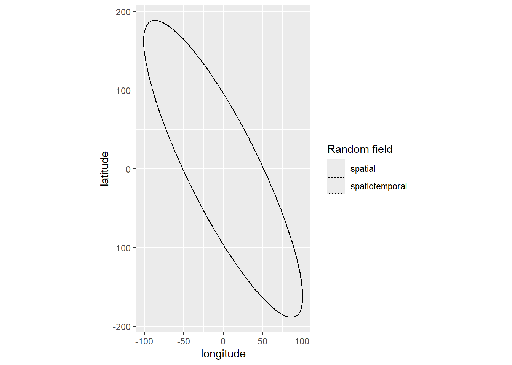
plot_anisotropy2(m1.2)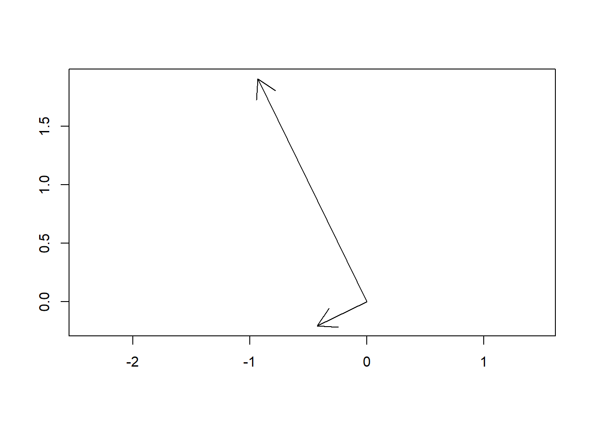
Evaluating model residuals
There are a few ways to evaluate model residuals in sdmTMB. Detailed examples are provided here. The main three are as follows:
- Randomized quantile residuals - Residuals are transformed from Tweedie (in this case) to a uniform distribution (cumulative probabilities). Probabilities are transformed to normal quantiles. Well-behaved rediuals will appear normal.
- Residuals calculated by sampling once from the approximate MVN distribution of the random effects, conditional on fixed effects held at their MLEs.
- Best to set a seed to avoid fishing for good looking residuals.
set.seed(67)
r1 <- residuals(m1.2, type = "mle-mvn")
qqnorm(r1);abline(0, 1)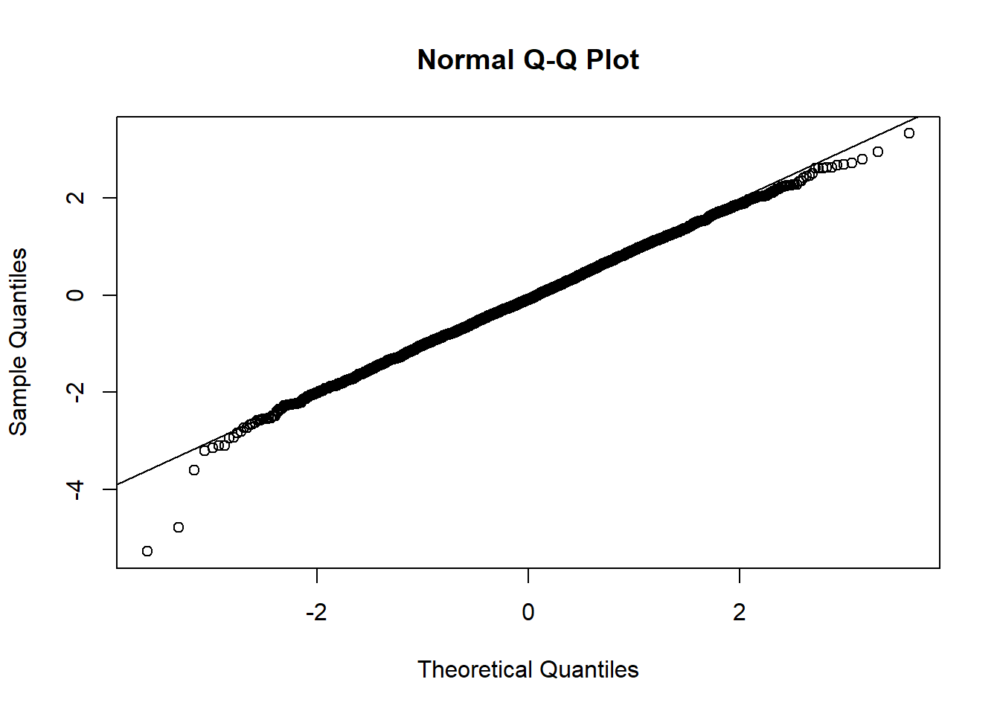
ks.test(r1, pnorm) # test to see if residuals deviate from normal
Asymptotic one-sample Kolmogorov-Smirnov test
data: r1
D = 0.036775, p-value = 0.0003778
alternative hypothesis: two-sided- Simulation-based randomized quantile residuals (DHARMa)
set.seed(67)
r2 <- simulate(m1.2, nsim = 1000, type = "mle-mvn") %>% #simulate
dharma_residuals(m1.2, return_DHARMa = TRUE) # pass to DHARMa
plot(r2)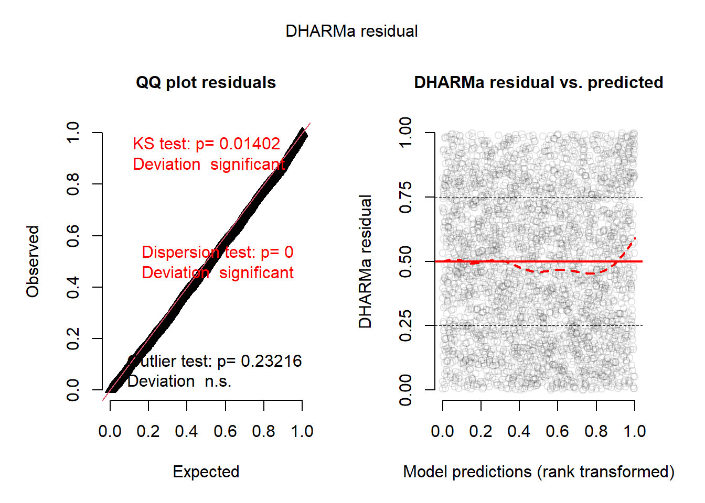
- MCMC based residuals - Relaxes assumptions of multivariate normality for random effects for randomized quantile residuals. This approach uses MCMC to sample the REs with fixed effects held at their MLEs.
if (process){
samps <- sdmTMBextra::predict_mle_mcmc(m1.2, mcmc_iter = 2000, mcmc_warmup = 800)
mcmc_res <- residuals(m1.2, type = "mle-mcmc", mcmc_samples = samps)
save(mcmc_res, file = here::here("data/m1_mcmc_resids.rdata"))
} else {
load(here::here("data/m1_mcmc_resids.rdata"))
}
SAMPLING FOR MODEL 'tmb_generic' NOW (CHAIN 1).
Chain 1:
Chain 1: Gradient evaluation took 0.008339 seconds
Chain 1: 1000 transitions using 10 leapfrog steps per transition would take 83.39 seconds.
Chain 1: Adjust your expectations accordingly!
Chain 1:
Chain 1:
Chain 1: Iteration: 1 / 2000 [ 0%] (Warmup)
Chain 1: Iteration: 200 / 2000 [ 10%] (Warmup)
Chain 1: Iteration: 400 / 2000 [ 20%] (Warmup)
Chain 1: Iteration: 600 / 2000 [ 30%] (Warmup)
Chain 1: Iteration: 800 / 2000 [ 40%] (Warmup)
Chain 1: Iteration: 801 / 2000 [ 40%] (Sampling)
Chain 1: Iteration: 1000 / 2000 [ 50%] (Sampling)
Chain 1: Iteration: 1200 / 2000 [ 60%] (Sampling)
Chain 1: Iteration: 1400 / 2000 [ 70%] (Sampling)
Chain 1: Iteration: 1600 / 2000 [ 80%] (Sampling)
Chain 1: Iteration: 1800 / 2000 [ 90%] (Sampling)
Chain 1: Iteration: 2000 / 2000 [100%] (Sampling)
Chain 1:
Chain 1: Elapsed Time: 925.56 seconds (Warm-up)
Chain 1: 1427.94 seconds (Sampling)
Chain 1: 2353.51 seconds (Total)
Chain 1: Warning: The largest R-hat is 1.06, indicating chains have not mixed.
Running the chains for more iterations may help. See
https://mc-stan.org/misc/warnings.html#r-hatWarning: Bulk Effective Samples Size (ESS) is too low, indicating posterior means and medians may be unreliable.
Running the chains for more iterations may help. See
https://mc-stan.org/misc/warnings.html#bulk-essWarning: Tail Effective Samples Size (ESS) is too low, indicating posterior variances and tail quantiles may be unreliable.
Running the chains for more iterations may help. See
https://mc-stan.org/misc/warnings.html#tail-essqqnorm(mcmc_res)
abline(0, 1)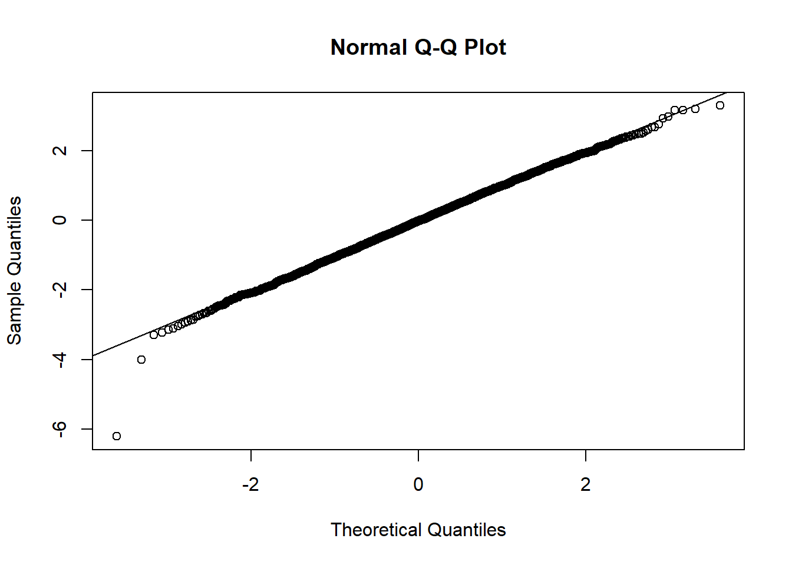
ks.test(mcmc_res, pnorm)
Asymptotic one-sample Kolmogorov-Smirnov test
data: mcmc_res
D = 0.021258, p-value = 0.114
alternative hypothesis: two-sidedMCMC based residuals are more robust than randomized quantile residuals due to relaxation of assumptions on REs, although take substantially more time to generate. DHARMa residuals are useful because you get easy access to the various tests available in DHARMa.
We identified some departure from residual expectations for this model when applying the analytical and simulation-based quantile residuals approach. The MCMC-based residuals behave as expected, although warnings during sampling suggest that MCMC chains may not have mixed well. Troubleshooting thing will take iteration, but it is worth exploring all three approaches to stress test your models.
Predicting from the model
Predicting from sdmTMB models is fun and rewarding. Here we will generate interannual predictions of hair crab density over a gridded spatial domain (the prediction grid) and compare them visually with observed CPUE. We need to expand our prediction grid so that we are generating predictions for each year.
Generating the prediction grid
The general workflow for predicting from sdmTMB models at new locations and/or times is as follows:
- Select a grid cell size and create the grid. In the following I provide you with the workflows to either a) alter grid cell resolution to use your own, or b) you can instead choose the gridded region used in the development of design-based indices for the EBS.
- Expand the data so that all grid cells are available at all time steps. Additional covariates must be included as columns.
- Extract grid cell centroids and convert to a data frame with columns for your longitude and latitude variables.
custom_resolution <- TRUE
# Set custom grid cell resolution
if (custom_resolution){
cellsize <- 20 #km x cellsize km
# polygon for the EBS
ebs_domain <-
st_read(here::here("data/SAP_layers.gdb"),
layer = "EBS_grid",
quiet = TRUE) %>%
st_transform(., ak_crs) %>%
st_union()
# re-grid it to our spatial resolution
ebs_grid <- ebs_domain %>%
st_make_grid(., cellsize = cellsize) %>%
st_intersection(., hair_loc_buffers) %>%
st_as_sf() %>%
mutate(id = 1:nrow(.),
area = as.numeric(st_area(.)))
# expand over time
pred_grid <- ebs_grid %>%
tidyr::expand_grid(.,
year = min(unique(hair_cpue$year)):max(unique(hair_cpue$year))) %>%
st_as_sf() %>%
filter(year != 2020) # COVID year - no survey so should not be in final data
# final outputs
pred_df <- pred_grid %>%
st_centroid() %>%
sfc_as_cols(., names = c("longitude","latitude")) %>%
st_set_geometry(NULL)
} else {
# polygon for the EBS
ebs_grid <-
st_read(here::here("data/SAP_layers.gdb"),
layer = "EBS_grid",
quiet = TRUE) %>%
st_transform(., ak_crs) %>%
st_intersection(., hair_loc_buffers) %>%
mutate(area = as.numeric(st_area(.))) %>%
dplyr::select(area) %>%
mutate(id = 1:nrow(.))
# expand over time
pred_grid <- ebs_grid %>%
tidyr::expand_grid(.,
year = min(unique(hair_cpue$year)):max(unique(hair_cpue$year)),
var = "hair_crab") %>%
st_as_sf() %>%
filter(year != 2020) # COVID year - no survey so should not be in final data
# convert to df
pred_df <- pred_grid %>%
st_centroid() %>%
sfc_as_cols(., names = c("longitude","latitude")) %>%
st_set_geometry(NULL) %>%
as.data.frame()
}Model predictions
Our goal is to generate an abundance index that approximates the design-based index for legal male hair crab. The model-based index in the NMFS EBS survey report is produced for the full Eastern Bering Sea. Therefore, there is no need to filter our prediction data frame prior to using it as newdata in sdmTMB::predict - we’ve already trimmed the prediction grid to the area of the EBS that overlaps with where hair crab occur. return_tmb_object = TRUE is required for passing predictions to the get_index function for index calculation.
model_predictions_df <- predict(m1.2, newdata = pred_df, type = "link",
return_tmb_object = TRUE)
model_predictions_df$data# A tibble: 12,340 × 10
id area year longitude latitude est est_non_rf est_rf omega_s
<int> <dbl> <int> <dbl> <dbl> <dbl> <dbl> <dbl> <dbl>
1 1 0.0540 2014 -605. 596. 0.886 -0.178 1.06 0.543
2 1 0.0540 2015 -605. 596. -0.230 -0.822 0.591 0.543
3 1 0.0540 2016 -605. 596. -1.22 -1.62 0.398 0.543
4 1 0.0540 2017 -605. 596. -0.453 -1.12 0.662 0.543
5 1 0.0540 2018 -605. 596. -0.927 -1.29 0.358 0.543
6 1 0.0540 2019 -605. 596. -1.28 -1.87 0.595 0.543
7 1 0.0540 2021 -605. 596. -1.60 -2.06 0.464 0.543
8 1 0.0540 2022 -605. 596. -1.57 -2.03 0.456 0.543
9 1 0.0540 2023 -605. 596. -1.47 -1.89 0.426 0.543
10 1 0.0540 2024 -605. 596. -0.865 -1.38 0.520 0.543
# ℹ 12,330 more rows
# ℹ 1 more variable: epsilon_st <dbl>The prediction data frame contains several columns of interests:
est- Predicted hair crab log-density (settype = responsefor the estimate on the response scale).est_non_rf- Log-density associated with fixed effects (year).est_rf- Log-density associated with random effects (spatial and spatiotemporal random fields).omega_s- Log-density associated with spatial random field.epsilon_st- Log-density associated with spatiotemporal random field.
Visualizing predictions by year:
model_predictions_sf <- pred_grid %>%
left_join(., model_predictions_df$data, by = c("id","year"))
ggplot() +
geom_sf(data = ak_land, fill = "darkgreen", alpha = 0.75) +
geom_sf(data = model_predictions_sf, aes(fill = est, color = est)) +
geom_sf(data = hair_cpue_sf_filt %>% filter(cpue > 0,
year >= 2014),
aes(size = log(cpue)), color = "red", alpha = 0.5) +
scale_fill_gradient2(low = scales::muted("red"),
high = scales::muted("blue"))+
scale_color_gradient2(low = scales::muted("red"),
high = scales::muted("blue"))+
guides(color = "none") +
labs(fill = "Predicted log(CPUE)",
size = "Observed log(CPUE>0)") +
theme_light() +
coord_sf(ylim = c(650, 1500),
xlim = c(-1300, -175)) +
facet_wrap(~year, ncol = 3) +
theme(legend.position = "bottom")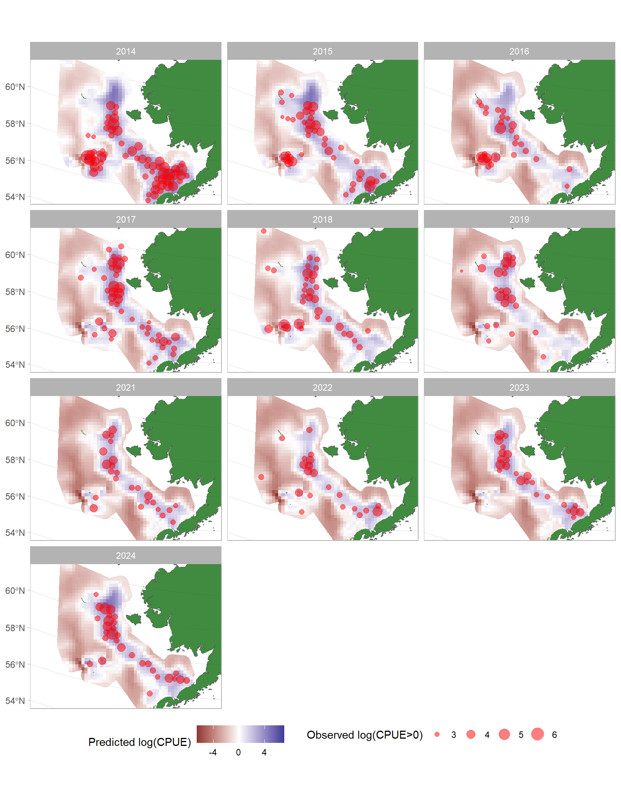
Generating the abundance index
Generating the final index is quite easy using the get_index function. Remember that the area argument is in sq. km. In the following script, we calculate the model-based index using get_index, and bind that to the design-based indices produced by crabpack.
model_based_index <-
get_index(obj = model_predictions_df,
bias_correct = TRUE,
area = pred_df$area) %>%
mutate(type = "Model-based")
design_based_index <-
hc_design_index_ebs %>%
rename_all(str_to_lower) %>%
mutate(lwr = ifelse((abundance - abundance_ci) < 0, 0,
(abundance - abundance_ci)),
upr = abundance + abundance_ci,
type = "Design-based") %>%
dplyr::select(year,
est = abundance,
lwr,
upr,
type) %>%
filter(year >= 2014)
combined_indices <- model_based_index %>%
bind_rows(., design_based_index)
ggplot(combined_indices)+
geom_errorbar(aes(ymax = upr, ymin = lwr, x = year, color = type), width = 0, linewidth = 1) +
geom_line(aes(y = est, x = year, color = type), linewidth = 1) +
scale_color_manual(values = c("Model-based" = "darkorange","Design-based" = "purple")) +
labs(title = "Design-based vs. model-based hair crab abundance indices",
y = "Abundance",
x = "Year") +
theme_bw() +
theme(legend.title = element_blank(),
legend.text = element_text(size = 12),
axis.title = element_text(size = 12),
title = element_text(size = 14))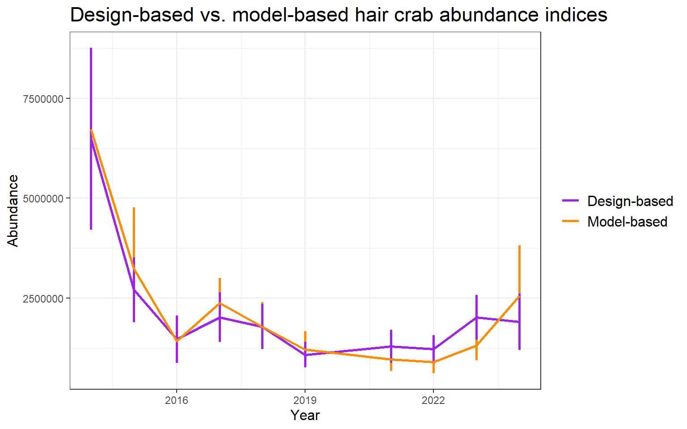
The design-based and model-based indices are roughly the same, as expected
What if we’re looking for an index on the scale of the units? For instance, if our observations are catch per pot or number per unit hour etc. We can simulate predictions from the joint precision matrix and apply any aggregation function over those draws.
model_predictions_df_sim <- predict(m1.2,
newdata = pred_df,
nsim = 1000,
type = "link")
model_based_index_relative <-
get_index_sims(obj = model_predictions_df_sim,
agg_function = function(x) median(exp(x)),
est_function = median)We generally recommend using `get_index(..., bias_correct = TRUE)`
rather than `get_index_sims()`.ggplot(model_based_index_relative)+
geom_errorbar(aes(ymax = upr, ymin = lwr,
x = year), width = 0, linewidth = 1) +
geom_line(aes(y = est, x = year), linewidth = 1) +
labs(y = "Catch km^-2",
x = "Year",
title = "Simulation-based relative index") +
theme_bw() +
theme(legend.title = element_blank(),
legend.text = element_text(size = 12),
axis.title = element_text(size = 12))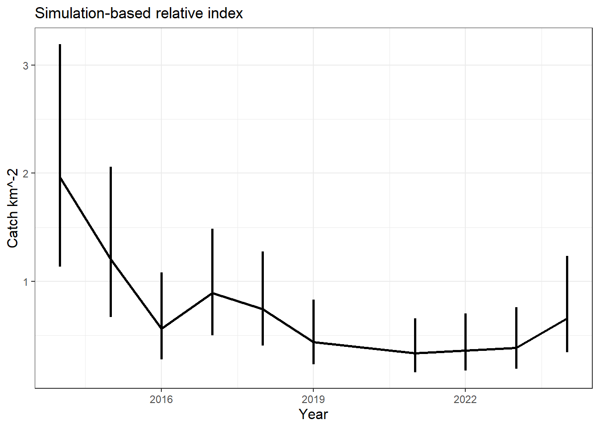
Keep in mind that we only fitted a single model in this analysis. Next, we will discuss model comparison and selection.